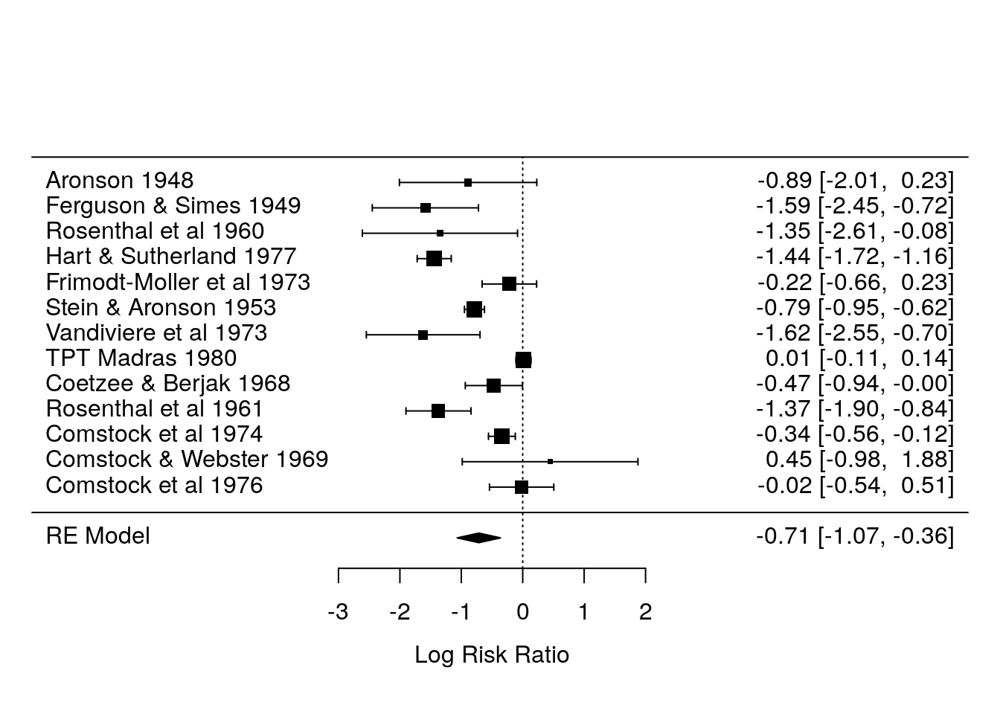
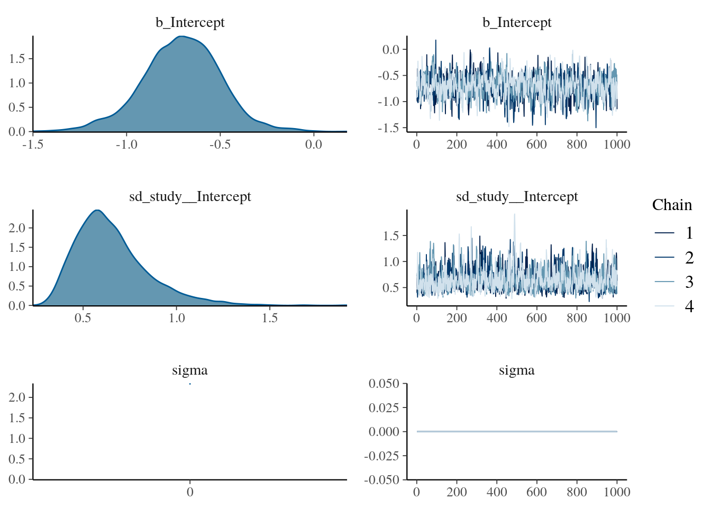
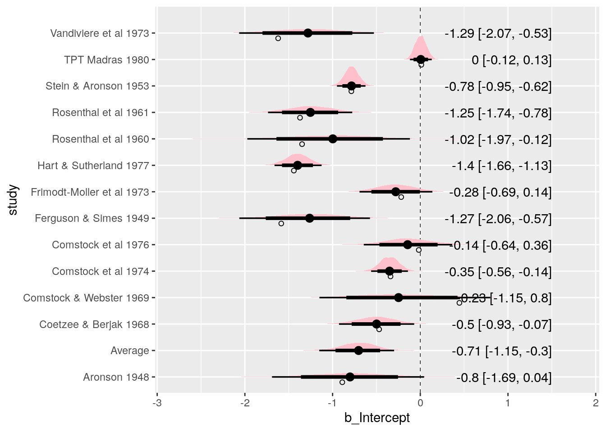
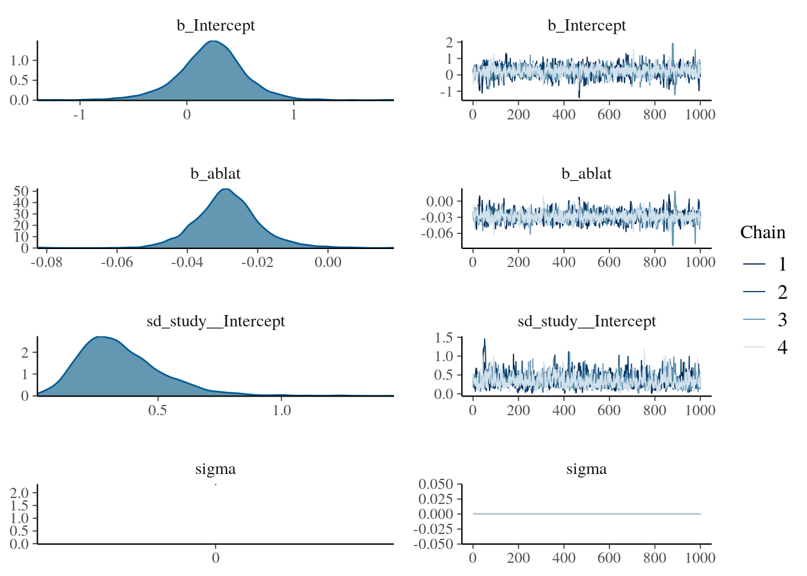
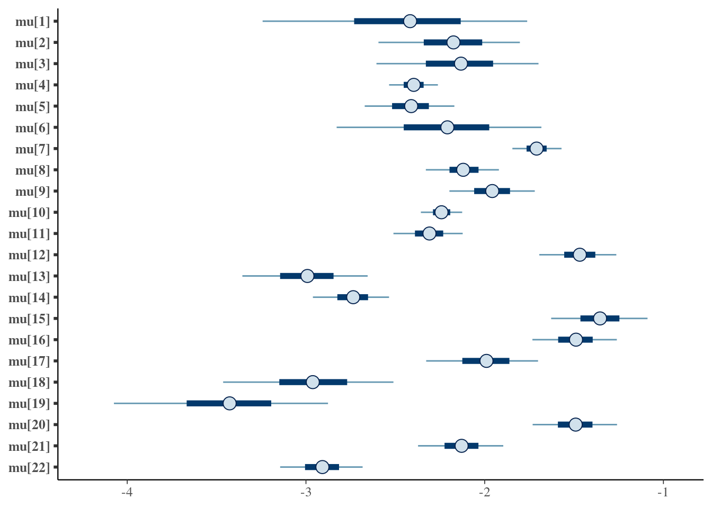
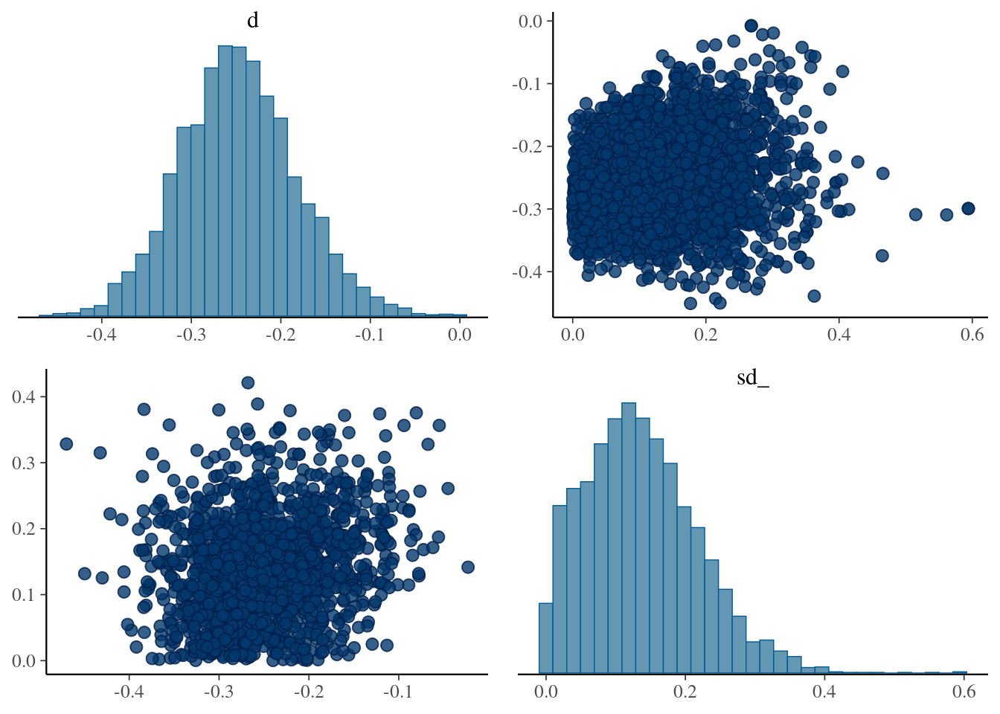

Session 8 Bayesian Meta-Analysis
- Learn how to fit and interpret Bayesian Meta-Analysis (MA)
- Understand the relationship between generalised linear models and MA
8.1 Introduction
Meta-analysis (MA), the pooling of evidence from independent sources, especially randomised controlled trials (RCTs) is now common in the medical research literature.
A “fixed-effect” model assumes that a single parameter value is common to all studies, and a “random-effects” model that parameters underlying studies follow some distribution (Higgins, Thompson, and Spiegelhalter 2009).
Software advances have contributed to the widespread use of meta-analytic techniques.
In this lecture, we will adopt the framework of generalised linear modelling (GLM) in the context of MA. Moreover, we will we see that every meta-analytic model comes with an inherent hierarchical structure (Dias et al. 2011).
GLM framework can, of course, be applied in either frequentist (maximizing the likelihood) or Bayesian contexts.
MA classical methods
The inverse variance method leads to two distinct approaches to data synthesis:
- Fixed-effect: \(\hat{\theta}=\frac{\sum Y_i W_i}{\sum W_i}\) = and its estimated variance is \(\mathrm{var}(\hat{\theta})=\frac{1}{\sum W_i}=\frac{1}{\sum \frac{1}{V_i}}\)
- Random-effects: Same as before but using \(W_i^*=\frac{1}{V_i+\hat{\tau}^2}\). Note that these weights include the between-study variance estimate
When choosing between both model, one view is that if there is heterogeneity, then it does not make sense to compute a pooled esimate.
- Only combine with fixed effets.
Another view says that there is always heterogeneity.
- Always combine with random effects model.
Not recommended (any more) to test for heterogeneity to make the decision.
8.2 Bayesian inference
- MCMC sampling procedures:
- Gibbs sampling (see document)
- Gibbs sampling with slice sampler
JAGS(see here) - Hybrid (Hamiltonian) Monte Carlo
Stan
8.3 Continuous data
Usually we will have effect sizes effect sizes \(Y_i\) for each study \(i\).
In a random-effects model, we assume that participants are nested within studies on a second level and that the true effect sizes \(\theta_i\) of different studies in our meta-analysis follow their own distribution, where the variance of each study is known. This distribution of true effects has a mean \(\mu\) (the pooled “true” effect we want to estimate) and variance \(\sigma^2_\theta\), representing the between-study heterogeneity (sometimes denoted as \(\tau^2_\theta=1/\sigma^2_\theta\).
Therefore the generative model can be written as:
\[ \begin{align*} Y_{i} &\sim \mathcal{N}(\theta_{i},\sigma^2_{Y_i}) \\ \theta_{i} &\sim \mathcal{N}(\mu,\sigma^2_\theta) \\ \mu, \sigma^2_\theta &\sim p(.) \end{align*} \]
The fixed-effect model is simply a special case of this model in which we assume that \(\sigma^2_\theta=0\), meaning that there is no between-study heterogeneity, and that all studies share one single true effect size (i.e. that for all studies \(i:\quad \theta_i=\mu\)).
To run this model, we have to specify the prior distributions of \(\mu\) and \(\sigma^2_\theta\). Particularly when the number of studies is small, priors can have a considerable impact on the results.
We will be using
brmsin this lecture. By default,brmsuse weakly informative priors (see here).When we say this prior is “weakly informative,” it means that if there’s a reasonably large amount of data, the likelihood will dominate. On the other hand, if the data are weak, this prior will stronglu influence the posterior.
8.3.1 Fitting a MA with brms
As mentioned previously, it is easy to fit MA models with
brms.Meta-analyses are somewhat special, because we do not have a variable predicting the effect size (unless when we perform a meta-regression). Also, we have mentioned that MA are also special because the variance of the observed effect size is known (\(\mathrm{var}(y_i)\)). This can be done in
brmsby usingy|se(se_y)instead of onlyy, where these(se_y)is the standard error of each observed effect size \(y_i\) in our data set.For the random-effects model,
brmssyntax will look like this:y|se(se_y) ~ 1 + (1|random). Try to guess how the syntax would be written if a fixed-effects model was used.
Example
- Colditz et al. (1994) performed a MA to examine the overall effectiveness of the BCG vaccine for preventing tuberculosis and to examine moderators that may potentially influence the size of the effect. This data is part of the library
metafor.
- We can calculate the log risk ratios and corresponding sampling variances with:
dat <- escalc(measure="RR", ai=tpos, bi=tneg, ci=cpos, di=cneg, data=dat.bcg)
dat <- dat %>% rename(study=author) %>% mutate(study=paste(study,year))- We can fit a (frequentist) random-effects model to these data using the library
metafor.
ma_out <- rma(data = dat, yi = yi, vi = vi, slab = dat$study)
summary(ma_out)##
## Random-Effects Model (k = 13; tau^2 estimator: REML)
##
## logLik deviance AIC BIC AICc
## -12.2024 24.4047 28.4047 29.3746 29.7381
##
## tau^2 (estimated amount of total heterogeneity): 0.3132 (SE = 0.1664)
## tau (square root of estimated tau^2 value): 0.5597
## I^2 (total heterogeneity / total variability): 92.22%
## H^2 (total variability / sampling variability): 12.86
##
## Test for Heterogeneity:
## Q(df = 12) = 152.2330, p-val < .0001
##
## Model Results:
##
## estimate se zval pval ci.lb ci.ub
## -0.7145 0.1798 -3.9744 <.0001 -1.0669 -0.3622 ***
##
## ---
## Signif. codes: 0 '***' 0.001 '**' 0.01 '*' 0.05 '.' 0.1 ' ' 1forest(ma_out)
- We can do the same but know under a Bayesian perspective.
fit_ma_random <- brm(data = dat,
family = gaussian,
yi | se(sqrt(vi)) ~ 1 + (1 | study),
iter = 2000,
warmup = 1000,
chains = 4,
cores = 4, #instructions on MCMC
seed = 123, # random number seed to make results reproducible
silent = 2,
refresh = 0)
#saveRDS(fit_ma_random, "data/chap8_ma_random")- Summarizing posterior results

## Family: gaussian
## Links: mu = identity; sigma = identity
## Formula: yi | se(sqrt(vi)) ~ 1 + (1 | study)
## Data: dat (Number of observations: 13)
## Draws: 4 chains, each with iter = 2000; warmup = 1000; thin = 1;
## total post-warmup draws = 4000
##
## Group-Level Effects:
## ~study (Number of levels: 13)
## Estimate Est.Error l-95% CI u-95% CI Rhat Bulk_ESS Tail_ESS
## sd(Intercept) 0.65 0.20 0.37 1.14 1.01 903 1261
##
## Population-Level Effects:
## Estimate Est.Error l-95% CI u-95% CI Rhat Bulk_ESS Tail_ESS
## Intercept -0.71 0.21 -1.15 -0.30 1.00 880 1395
##
## Family Specific Parameters:
## Estimate Est.Error l-95% CI u-95% CI Rhat Bulk_ESS Tail_ESS
## sigma 0.00 0.00 0.00 0.00 NA NA NA
##
## Draws were sampled using sampling(NUTS). For each parameter, Bulk_ESS
## and Tail_ESS are effective sample size measures, and Rhat is the potential
## scale reduction factor on split chains (at convergence, Rhat = 1).- We can check the default priors in our model
## prior class coef group resp dpar nlpar bound
## student_t(3, -0.8, 2.5) Intercept
## student_t(3, 0, 2.5) sd
## student_t(3, 0, 2.5) sd study
## student_t(3, 0, 2.5) sd Intercept study
## source
## default
## default
## (vectorized)
## (vectorized)- The forest plot displays the entire posterior distribution of each \(\theta_i\). The meta-analytic effect size \(\mu\) is also displayed in the bottom row.
out_r <- spread_draws(fit_ma_random, r_study[study,term], b_Intercept) %>%
mutate(b_Intercept = r_study + b_Intercept)
out_f <- spread_draws(fit_ma_random, b_Intercept) %>%
mutate(study = "Average")
out_all <- bind_rows(out_r, out_f) %>%
ungroup() %>%
mutate(study = fct_relevel(study, "Average")) %>%
mutate(study = str_replace_all(study, "\\.", " "))
out_all_sum <- group_by(out_all, study) %>%
mean_qi(b_Intercept)
out_all %>%
ggplot(aes(b_Intercept, study)) +
geom_vline(xintercept = 0, size = .25, lty = 2) +
stat_halfeye(.width = c(.8, .95), fill = "pink") +
geom_text(
data = mutate_if(out_all_sum, is.numeric, round, 2),
aes(label = str_glue("{b_Intercept} [{.lower}, {.upper}]"), x = 1.5),
hjust = "inward"
) +
# Observed as empty points
geom_point(
data = dat %>% mutate(study = str_replace_all(study, "\\.", " ")),
aes(x=yi), position = position_nudge(y = -.2), shape = 1
)
Run a fixed-effect model
fit_ma_fixed <- brm(data = dat,
family = gaussian,
yi | se(sqrt(vi)) ~ 1,
iter = 2000,
warmup = 1000,
chains = 4,
cores = 4,
seed = 123
silent = 2,
refresh = 0)8.3.2 Meta-regression
Meta-regressions are similar in essence to simple regressions, in which an outcome variable is predicted according to the values of one or more explanatory variables. In meta-regression, the outcome variable is the effect estimate. The explanatory variables are characteristics of studies that might influence the size of intervention effect. These are often called ‘potential effect modifiers’ or covariates.
Using the same dataset (BCG vaccine), we will use the absolute latitude of the study location as a moderator. We first do it with
metafor.
ma_reg <- rma(yi, vi, mods = ~ ablat, data=dat)
summary(ma_reg)##
## Mixed-Effects Model (k = 13; tau^2 estimator: REML)
##
## logLik deviance AIC BIC AICc
## -8.0873 16.1746 22.1746 23.3683 25.6032
##
## tau^2 (estimated amount of residual heterogeneity): 0.0764 (SE = 0.0591)
## tau (square root of estimated tau^2 value): 0.2763
## I^2 (residual heterogeneity / unaccounted variability): 68.39%
## H^2 (unaccounted variability / sampling variability): 3.16
## R^2 (amount of heterogeneity accounted for): 75.62%
##
## Test for Residual Heterogeneity:
## QE(df = 11) = 30.7331, p-val = 0.0012
##
## Test of Moderators (coefficient 2):
## QM(df = 1) = 16.3571, p-val < .0001
##
## Model Results:
##
## estimate se zval pval ci.lb ci.ub
## intrcpt 0.2515 0.2491 1.0095 0.3127 -0.2368 0.7397
## ablat -0.0291 0.0072 -4.0444 <.0001 -0.0432 -0.0150 ***
##
## ---
## Signif. codes: 0 '***' 0.001 '**' 0.01 '*' 0.05 '.' 0.1 ' ' 1- We can do the same with
brms.
fit_ma_reg <- brm(data = dat,
family = gaussian,
yi | se(sqrt(vi)) ~ 1 + ablat+ (1 | study),
iter = 2000,
warmup = 1000,
chains = 4,
cores = 4, #instructions on MCMC
seed = 123, # random number seed to make results reproducible
silent = 2,
refresh = 0)
#saveRDS(fit_ma_reg, "data/chap9_ma_reg")- Summarizing posterior results

## Family: gaussian
## Links: mu = identity; sigma = identity
## Formula: yi | se(sqrt(vi)) ~ 1 + ablat + (1 | study)
## Data: dat (Number of observations: 13)
## Draws: 4 chains, each with iter = 2000; warmup = 1000; thin = 1;
## total post-warmup draws = 4000
##
## Group-Level Effects:
## ~study (Number of levels: 13)
## Estimate Est.Error l-95% CI u-95% CI Rhat Bulk_ESS Tail_ESS
## sd(Intercept) 0.35 0.17 0.09 0.75 1.01 851 1363
##
## Population-Level Effects:
## Estimate Est.Error l-95% CI u-95% CI Rhat Bulk_ESS Tail_ESS
## Intercept 0.23 0.32 -0.46 0.85 1.00 1500 1363
## ablat -0.03 0.01 -0.05 -0.01 1.00 1550 1331
##
## Family Specific Parameters:
## Estimate Est.Error l-95% CI u-95% CI Rhat Bulk_ESS Tail_ESS
## sigma 0.00 0.00 0.00 0.00 NA NA NA
##
## Draws were sampled using sampling(NUTS). For each parameter, Bulk_ESS
## and Tail_ESS are effective sample size measures, and Rhat is the potential
## scale reduction factor on split chains (at convergence, Rhat = 1).- Compare models using loo-cv.
## elpd_diff se_diff
## fit_ma_random 0.0 0.0
## fit_ma_reg -1.2 2.58.4 Other types of data
The essential idea is that the basic apparatus of the meta-analysis remains the same, but the likelihood and the link function can change to reflect the nature of the data (continuous, rate, categorical), and the sampling process that generated it (Normal, Poisson, Multinomial, etc). In GLM theory, a likelihood is defined in terms of some unknown parameters \(\gamma\), while a link function \(g(·)\), maps the parameters of interest onto the plus/minus infinity range.
Then, we have:
\[ \begin{align*} Y_i &\sim P(.) \\ g(\gamma) &= \theta_{i1}=\mu_i \\ g(\gamma) &= \theta_{i2}=\mu_i + \delta_{i,12} \\ \delta_{i,12} &\sim \mathcal{N}(d_{12},\sigma^2) \end{align*} \]
Where \(P(.)\) denotes the likelihood (GLM), \(g\) is an appropriate link function (for example the logit link), and \(\theta_i\) is the linear predictor, usually a continuous measure of the treatment effect. \(\mu_i\) are the trial-specific baseline effects in a trial \(i\), treated as unrelated nuisance parameters. The \(\delta_{i,12}\) are the trial-specific treatment effect of the treatment relative to control in that trial.
The only missing is the likelihood of the observed effet sizes. As an example, if we have binomial data (number of events and sample size per trial), we can write the MA generative model with this type of data.
\[ \begin{align*} r_{ik} &\sim \mathrm{Bin}(n_{ik},p_{ik}) \quad k=1,2\\ \mathrm{logit}(p_{i1}) &= \mu_i \\ \mathrm{logit}(p_{i2}) &= \mu_i+\delta_{i,12} \\ \delta_{i,12} &\sim \mathcal{N}(d_{12},\sigma^2) \\ d_{12}, \sigma^2,\mu_i &\sim p(.) \end{align*} \]
- As an example, Carlin (1992) consider a MA of 22 trials of beta-blockers to prevent mortality after myocardial infarction.
- We will now fit this model in
Stan(the PPL behindbrms).
data {
int ns;
int r[ns,2];
int n[ns,2];
}
parameters{
real mu[ns];
real<lower=0> sd_;
real d_raw;
real delta_raw[ns];
}
transformed parameters {
matrix[ns,2] p;
real d;
real delta[ns];
d = 5*d_raw;
for(i in 1:ns){
// implies: delta ~ normal(d, sd_)
delta[i] = d + sd_*delta_raw[i];
for(k in 1:2){
if(k == 1){
p[i,k] = inv_logit(mu[i]);
} else {
p[i,k] = inv_logit(mu[i] + delta[i]);
}
}
}
}
model {
target += normal_lpdf(d_raw| 0,1);
for(i in 1:ns){
target += normal_lpdf(delta_raw[i] | 0, 1);
for(k in 1:2){
target += binomial_lpmf(r[i,k]| n[i,k],p[i,k]);
}
}
}
- Below you will find the syntax to compile the model and run it in
R.
test = read.csv("data/testData.txt",header = T)
r = cbind(test[,1],test[,3])
n = cbind(test[,2],test[,4])
data <- list(ns=22,
r=r,
n=n)
model=cmdstan_model("stan/model1a.stan")
fit=model$sample(data = data,
chains = 3,
parallel_chains = 3,
#max_treedepth = 15,
iter_warmup = 500,
iter_sampling = 1500)
#fit$save_object(file = "data/fit_stan.RDS")- Summarizing posterior results
- Plotting baseline risks and the scatterplot of \(d_{12}\) and \(sigma\).
theta = fit$draws(c("mu","d","sd_"))
mcmc_intervals(theta,regex_pars = "mu")
mcmc_pairs(theta,pars = c("d","sd_"))
Run a fixed-effect mode and random-effects model with brms using the binomial data example
dat <- read_csv("data/blocker.csv")
fit_ma_binomial_random <-
brm(data = dat,
family = binomial,
events | trials(ss) ~ trtid + (trtid|id),
iter = 2000, warmup = 1000, cores = 4, chains = 4)
fit_ma_binomial_fixed<-
brm(data = dat,
family = binomial,
events | trials(ss) ~ trtid,
iter = 2000, warmup = 1000, cores = 4, chains = 4)